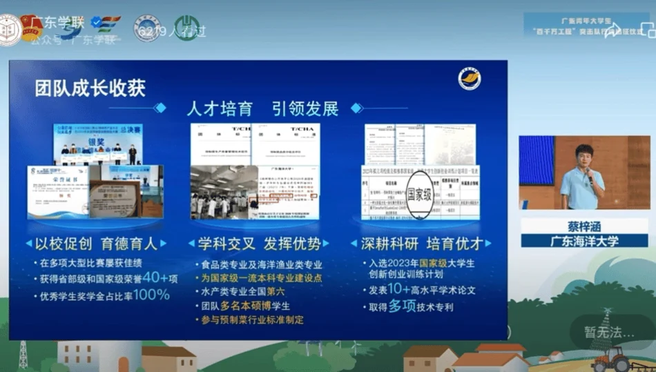
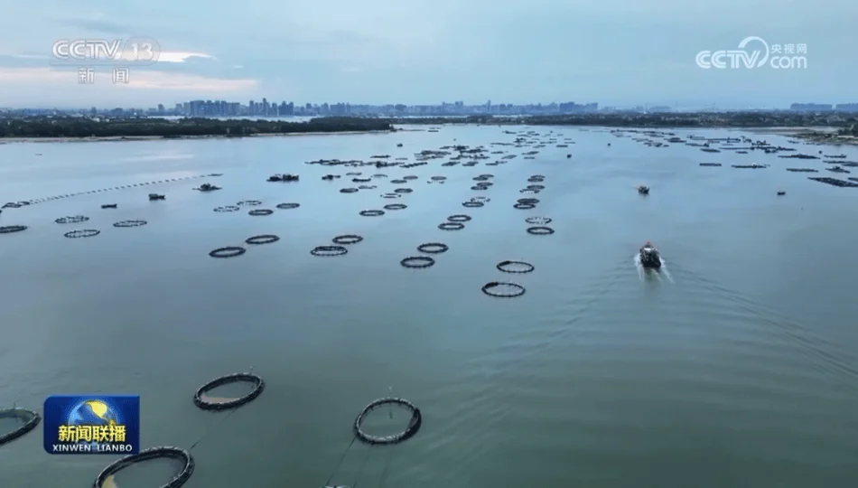

OUTCOME
National Silver Award · China International College Students’ Innovation Competition
FOCUS
Market Intelligence · Product Strategy · Commercialisation · Financial Analysis · Partnership Development · Rural Revitalisation
MY CONTRIBUTION
Market & Industry Intelligence
Conducted 10+ rounds of field research across aquaculture communities, enterprises and industry stakeholders, translating first-hand findings into market positioning, customer insights and value-chain analysis.
Product & Go-to-Market
Developed product SKU concepts and differentiated positioning strategies for golden-pomfret products, translating consumer and channel insights into packaging, product propositions and targeted marketing plans.
Partnerships & Commercialisation
Engaged directly with companies, customers and local cooperatives, supporting commercial negotiations and the signing of purchase agreements while connecting upstream aquaculture production with downstream market demand.
Business & Financial Analysis
Co-developed the business plan and supported financial management and performance analysis, evaluating revenue logic, cost structures and operating indicators throughout successive project iterations.
From first-hand research to project presentation
10+ rounds of industry research with processing enterprises and aquaculture stakeholders in Guangdong, alongside project reviews, team collaboration and competition presentations.
On site with the team
Research · Exchange · PresentationThree regional product identities
SKU concepts and packaging designs connecting regional aquaculture stories with a market-facing product identity.
Connecting producers with the market
Engaged with enterprises, customers and local cooperatives, supporting commercial negotiations and purchase agreements across the value chain.
FROM IDEA TO IMPLEMENTATION
- 01FIELD
10+ rounds of field research
- 02INSIGHT
Industry & customer analysis
- 03PRODUCT
SKU & packaging development
- 04MARKET
Enterprise & cooperative negotiations
- 05TRACTION
Signed purchase agreements
- 06IMPACT
Six-village rural support
- 07SCALE
National competitions & media recognition
Project Deck
8 selected slidesProduct concepts in the real world
Product concepts were taken beyond presentation decks into physical displays, industry engagement and external showcases.
Social impact at scale
Worked directly with communities across six villages in Guangdong, combining commercial development with cooperative engagement, industry outreach and rural-revitalisation activities.
The project was recognised as an early demonstration initiative under Guangdong’s “High-Quality Development Project for Counties, Towns and Villages.”


From local fieldwork
to national coverage
The only Guangdong team selected for CCTV’s national coverage, bringing the project’s rural-industry practice to a nationwide audience.
The project’s work on aquaculture, prepared-food development and rural revitalisation was brought to a national audience through CCTV coverage.